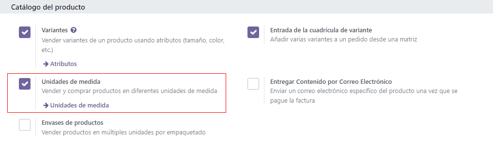
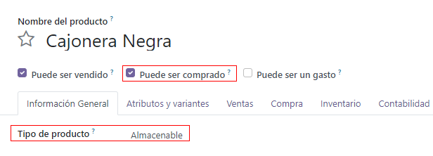
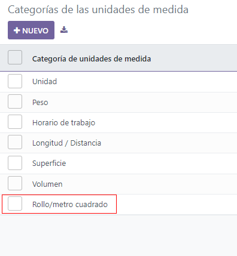
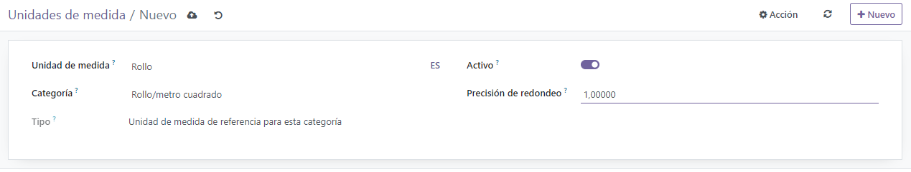
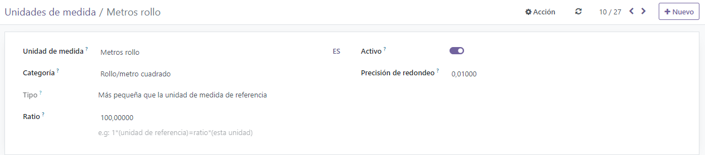
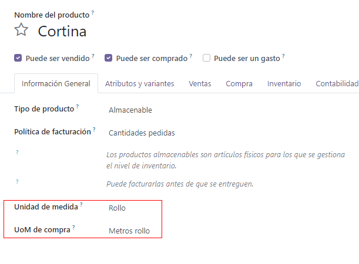

Compre en unidades de medida diferentes a las de venta¶
Puede que su proveedor use una unidad de medida diferente a la que usted quiera usar cuando venda su producto. Esto puede causar confusión entre los representantes de ventas y de compras. Además, es una pérdida de tiempo convertir las medidas manualmente cada vez. Con Odoo, puede configurar su producto una vez y dejar que Odoo se encargue de la conversión.
Considere los siguientes ejemplos:
Compra jugo de naranja a un vendedor estadounidense en galones. Sin embargo, sus clientes son europeos y utilizan litros.
Compra cortinas a un proveedor en rollos y vende partes de los rollos a sus clientes en metros cuadrados.
Habilitar las unidades de medida¶
Abra la aplicación Ventas y vaya a . Abajo del catálogo del producto, habilite Unidades de medida.
Especificar las unidades de medida de compra y venta¶
Unidades de medida estándar¶
Cuenta con una variedad de unidades de medida disponibles de forma predeterminada en su base de datos. Cada una pertenece a una de las cinco categorías de unidades de medida: Longitud/Distancia, Unidad, Volumen, Peso y Tiempo de trabajo.
Truco
Puede crear sus nuevas unidades de medida y categorías de unidades de medida (consulte la siguiente sección).
Para especificar las diferentes unidades de medida para las compras y las ventas, abra su aplicación de Compra y vaya a . Cree un producto o seleccione uno existente. Primero seleccione la Unidad de medida a usar para Ventas (al igual que para otras aplicaciones como Inventario) debajo de la pestaña Información general. Después seleccione la Unidad de medida para Compra que se va a utilizar para las compras.
Regresando al primer ejemplo, si compra jugo de naranja en galones y lo vende en litros, debe seleccionar L (litros) como Unidad de medida y gal (US) (galones) como Unidad de medida para compra y hacer clic en Guardar.
Crear nuevas unidades y categorías de medida.¶
A veces necesita crear sus propias unidades y categorías, ya sea porque no está preconfigurada la medida en Odoo o porque las unidades no están relacionadas entre ellas (por ejemplo, kilos y centímetros).
En el segundo ejemplo, se compran cortinas en rollos y se venden pedazos de rollos en metros cuadrados, por lo que es necesario crear una nueva categoría de unidades de medida para relacionarlas.
Para hacerlo, vaya a . y nombre la nueva categoría.
El siguiente paso es crear dos unidades de medida. Para hacerlo, vaya a .
Primero, cree la unidad de medida usada como punto de referencia para convertir las demás unidades de medida dentro de la categoría que acaba de crear. Seleccione Referencia de unidad de medida para el tipo de categoría como Tipo. Establezca la Precisión de redondeo que le gustaría usar. La cantidad calculada por Odoo siempre será un múltiplo de este valor.
En este ejemplo, como no puede comprar menos de 1 rollo y no usará fracciones de rollo como unidad de medida, puede ingresar 1.
Nota
Si utiliza una precisión de redondeo inferior a 0.01 es posible que aparezca un mensaje de advertencia indicando que es mayor que la precisión decimal y que podría causar inconsistencias. Si desea utilizar una precisión de redondeo menor a 0.01, primero active el modo de desarrollador y vaya a , seleccione Unidad de medida del producto y edite los dígitos según corresponda. Por ejemplo, establezca los dígitos en 5 si desea usar una precisión de redondeo de 0.00001.
Después cree una segunda unidad de medida, póngale nombre y seleccione la misma categoría de unidad de medida que su unidad de referencia. Seleccione Menor o Mayor que la referencia de unidad de medida como Tipo, según su situación.
Como el rollo de cortina equivale a 100 metros cuadrados, debería seleccionar Menor.
Ahora, debe introducir el Ratio entre su unidad de referencia y la segunda. Si la segunda unidad es más pequeña, el Ratio debe ser mayor que 1. Si la segunda unidad es mayor, el ratio debe ser menor que 1.
Para el rollo de cortina, debe establecer un ratio de 100.
Ahora puede establecer su producto como lo haría con las unidades de medida estándar de Odoo.
